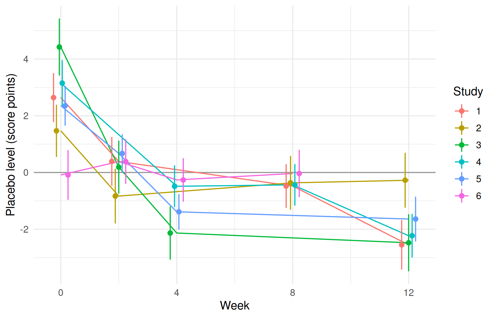
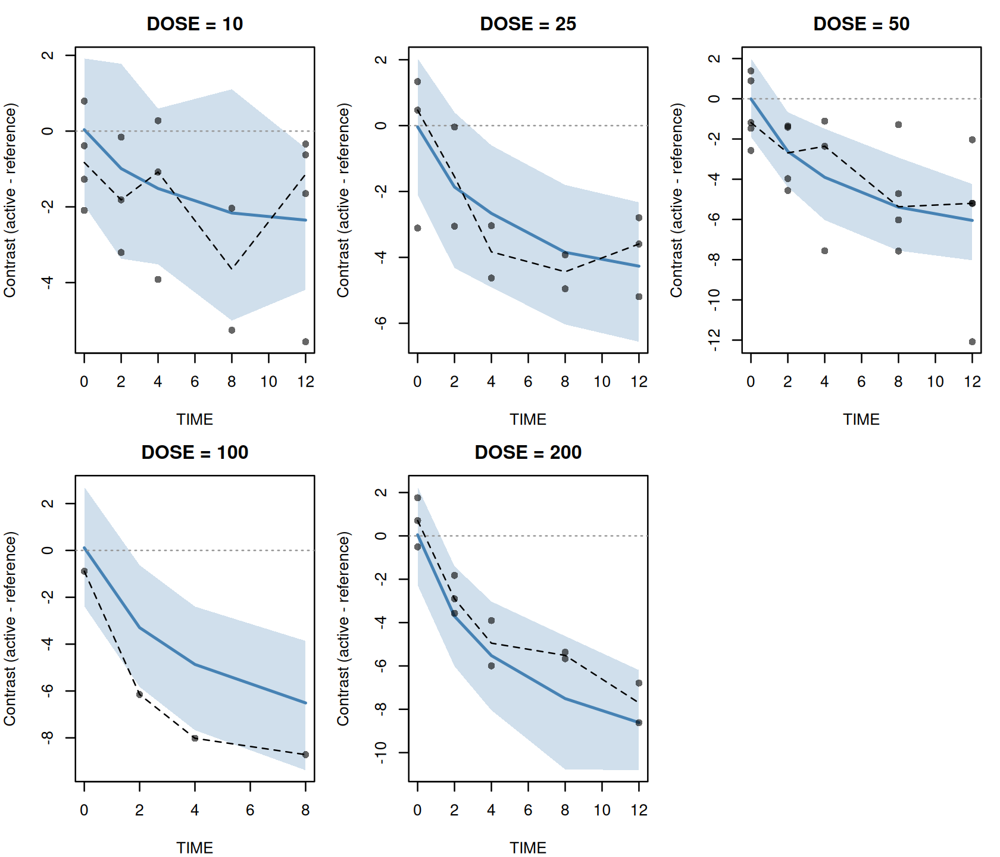

Model-based meta-analysis
Where you are
A model-based meta-analysis (MBMA) fits a dose-response and time-course model to published summary data: one mean per study arm and visit, with its standard error and the number of patients behind it. There are no individual patients. Each row counts according to its precision, and arms differ from one another more than their sampling error alone explains.
This chapter fits the bundled mbma_placebo example. It covers the arm-level data shape and ferx_mbma_data(), inverse-variance weighting with weight = on the error model, between-arm variability as a weighted kappa, an unstructured placebo time course as a theta level block, and how to read, save and resample such a fit.
This chapter needs the build the book is pinned to (Installing ferx). ferx-r 0.4.0 has no ferx_mbma_data() (nor print() for its result), no mbma_placebo example, no fit$theta_levels and no ferx_contrast_vpc() (nor print() or plot() for its result). Fitting a data.frame, the .fitrx round trip of a level block, the standard error and SIR interval of each level, ferx_sir() / ferx_covariance() following the fit’s own settings, a profiled level block (profile, fit$profiled_blocks, bounds on it and fit$profiled_levels_at_bound), nested variability levels (level, fit$kappa_levels, fit$ebe_kappas_by_level, the nested_levels example) and a within-arm residual correlation line are newer than 0.4.0 as well.
The weight = modifier, on the error model and on a kappa, is experimental in ferx-core (residual weighting, sample-size-weighted IOV). So is the residual correlation line. Theta level blocks are documented on the parameters page.
The data
The bundled data are synthetic: six studies of a symptom score (lower is better), each with a placebo arm and two or three dose arms, observed at week 0 and three later visits. Each row is one arm at one visit:
mbma <- ferx_example("mbma_placebo")
mbma_dir <- file.path(tempdir(), "mbma")
dir.create(mbma_dir, showWarnings = FALSE)
arm_data <- read.csv(mbma$data)
head(arm_data, 5)
#> ID STUDY OCC TIME DV MDV NARM SE DOSE
#> 1 1 1 1 0 49.630 0 88 1.0645112 0
#> 2 1 1 1 2 46.720 0 88 1.0037490 0
#> 3 1 1 1 8 46.387 0 88 1.0130232 0
#> 4 1 1 1 12 43.638 0 88 1.1673805 0
#> 5 1 1 2 0 50.967 0 194 0.6791166 25
arm_data |>
group_by(STUDY) |>
summarise(arms = n_distinct(OCC), weeks = paste(sort(unique(TIME)), collapse = ", "),
doses = paste(sort(unique(DOSE)), collapse = ", "),
min_NARM = min(NARM), max_NARM = max(NARM))
#> # A tibble: 6 × 6
#> STUDY arms weeks doses min_NARM max_NARM
#> <int> <int> <chr> <chr> <int> <int>
#> 1 1 4 0, 2, 8, 12 0, 25, 50, 200 88 194
#> 2 2 3 0, 2, 8, 12 0, 10, 50 42 222
#> 3 3 3 0, 2, 4, 12 0, 10, 25 70 159
#> 4 4 4 0, 4, 8, 12 0, 10, 25, 50 50 216
#> 5 5 4 0, 2, 4, 12 0, 10, 50, 200 194 249
#> 6 6 4 0, 2, 4, 8 0, 50, 100, 200 52 248The columns follow one convention:
-
IDandSTUDYare the study. A random effect onIDis therefore between-study variability. -
OCCis the arm within the study, numbered from 1. A kappa, the random effect that is drawn once per occasion, is therefore between-arm variability. -
DVis the reported arm mean,SEits standard error andNARMthe number of patients in the arm.DOSEis the arm’s dose; placebo arms have 0. - There are no dose records. The model is compartment-free:
DOSEis a covariate, not an amount.
Building the dataset with ferx_mbma_data()
Published summaries rarely come in this layout. ferx_mbma_data() turns a table with one row per study, arm and timepoint into it, and checks it on the way. The script that generated the bundled data ends with that call, so running it gives both the raw table (arms) and the bundled file:
generator <- system.file("examples", "mbma_placebo", "simulate_dataset.R", package = "ferx")
gen <- new.env()
gen$mbma_out_csv <- file.path(mbma_dir, "rebuilt.csv")
sys.source(generator, envir = gen)
#> Realised TVE0 truth (nominal 50 + mean study eta 0.7173 + mean placebo deviation -2.5225): 48.1949
#> Converted `sd` to a standard error as sd / sqrt(n).
#> Wrote 88 rows to /tmp/RtmpAqmECb/mbma/rebuilt.csv
head(gen$arms, 5)
#> trial arm DOSE week mean sd n
#> 1 T01 1 0 0 49.630 9.986 88
#> 2 T01 1 0 2 46.720 9.416 88
#> 3 T01 1 0 8 46.387 9.503 88
#> 4 T01 1 0 12 43.638 10.951 88
#> 5 T01 2 25 0 50.967 9.459 194The raw table names its columns as a publication would: a trial label, an arm number, the week, the arm mean, the between-patient standard deviation and the arm size. ferx_mbma_data() takes the name of each:
arm_table <- ferx_mbma_data(gen$arms, study = "trial", arm = "arm", time = "week",
mean = "mean", sd = "sd", n = "n", covariates = "DOSE")
#> Converted `sd` to a standard error as sd / sqrt(n).
arm_table
#> <ferx_mbma_data> 88 records, 6 studies, 22 arms
#> arms per study: 3-4
#> timepoints per arm: 4
#> implied SD (SE * sqrt(NARM)): 6.13 to 12.1
#>
#> ID STUDY OCC TIME DV MDV NARM SE DOSE
#> 1 1 1 1 0 49.630 0 88 1.0645112 0
#> 2 1 1 1 2 46.720 0 88 1.0037490 0
#> 3 1 1 1 8 46.387 0 88 1.0130232 0
#> 4 1 1 1 12 43.638 0 88 1.1673805 0
#> 5 1 1 2 0 50.967 0 194 0.6791166 25
#> 6 1 1 2 2 46.678 0 194 0.6729422 25
#> ... 82 more records
attr(arm_table, "arms") |> head(4)
#> STUDY OCC study arm
#> 1 1 1 T01 1
#> 2 1 2 T01 2
#> 3 1 3 T01 3
#> 4 1 4 T01 4
all.equal(read.csv(gen$mbma_out_csv), arm_data)
#> [1] TRUEprint() on a ferx_mbma_data object reports the number of studies and arms and the range of SE * sqrt(NARM), the between-patient SD the standard errors imply. That range is a quick check that the precision column holds what you think it does. The arms attribute maps each (STUDY, OCC) back to the original trial and arm labels, and the rebuilt file equals the bundled one.
The arguments:
-
datais the arm table.study,arm,time,meanandnname its columns. - Give exactly one of
se(the standard error of the arm mean) orsd(the between-patient SD, converted tosd / sqrt(n), as the message above says). -
scaleis"continuous"(the default),"proportion"or"percent". The last two check the range ofmean, and"percent"dividesmeanandseby 100. -
covariatescarries further columns through. Character and factor columns are coded as integers, with the codes inattr(d, "codes"). -
levelsadds aLEVEL_IDXcolumn that numbers the observed combinations of the named columns, for a counted level blocktheta NAME[N].indextakes your own numbering instead, for example to pool visits into windows. This chapter’s model uses the data-driven form, which needs neither.
with_index <- ferx_mbma_data(gen$arms, study = "trial", arm = "arm", time = "week",
mean = "mean", sd = "sd", n = "n", levels = c("STUDY", "TIME"))
#> Converted `sd` to a standard error as sd / sqrt(n).
head(attr(with_index, "levels"), 5)
#> index label STUDY TIME
#> 1 1 STUDY=1,TIME=0 1 0
#> 2 2 STUDY=1,TIME=2 1 2
#> 3 3 STUDY=1,TIME=8 1 8
#> 4 4 STUDY=1,TIME=12 1 12
#> 5 5 STUDY=2,TIME=0 2 0The checks catch preparation mistakes that would otherwise fit without complaint. A score read as a proportion is refused, and a study left with one arm is flagged, because nothing within it informs the treatment effect:
try(ferx_mbma_data(gen$arms, study = "trial", arm = "arm", time = "week",
mean = "mean", sd = "sd", n = "n", scale = "proportion"))
#> Converted `sd` to a standard error as sd / sqrt(n).
#> Error : `mean` is outside [0, 1] for scale = "proportion": (study T01, arm 1, time 0), (study T01, arm 1, time 2), (study T01, arm 1, time 8), (study T01, arm 1, time 12), (study T01, arm 2, time 0), (study T01, arm 2, time 2), (study T01, arm 2, time 8), (study T01, arm 2, time 12), (study T01, arm 3, time 0), (study T01, arm 3, time 2), and 78 more. The values look like percentages; use scale = "percent".
one_arm <- subset(gen$arms, !(trial == "T01" & arm > 1))
invisible(ferx_mbma_data(one_arm, study = "trial", arm = "arm", time = "week",
mean = "mean", sd = "sd", n = "n"))
#> Converted `sd` to a standard error as sd / sqrt(n).
#> Warning: Study(ies) T01 contribute a single arm, so no comparison within them
#> informs a treatment effect.The result goes straight into the fitting functions: their data argument takes a data.frame as well as a CSV path (shown below).
Minimal runnable call
The model has four parts: a typical placebo level TVE0 with a between-study random effect ETA_E0, a placebo time course PLACEBO with one level per study and visit, an Emax dose-response that builds up over time, and a between-arm random effect KAPPA_ARM:
invisible(ferx_model_get_section(mbma$model, "parameters"))
#> # [parameters]
#> theta TVE0(45.0, 0.0, 200.0) # mean placebo level over a study's visits
#> theta EMAX(8.0, 0.0, 100.0) # maximum drug effect (score points)
#> theta ED50(20.0, 0.1, 1000.0) # dose at half-maximal effect (mg)
#> theta ET50(2.0, 0.01, 100.0) # time to half-maximal drug effect (weeks)
#> theta PLACEBO[STUDY, TIME, contrast = sum_to_zero_within](0.0, -50.0, 50.0)
#>
#> omega ETA_E0 ~ 4.0 (sd) # between-study variability on TVE0
#> kappa KAPPA_ARM ~ 4.0 (sd) weight = NARM
#>
#> sigma ADD_ERR ~ 1.0 (variance) FIX
invisible(ferx_model_get_section(mbma$model, "individual_parameters"))
#> # [individual_parameters]
#> BASE = TVE0 + PLACEBO + ETA_E0 + KAPPA_ARM
invisible(ferx_model_get_section(mbma$model, "structural_model"))
#> # [structural_model]
#> DRUG = EMAX * DOSE / (ED50 + DOSE) * TIME / (TIME + ET50)
#> y = BASE - DRUG
invisible(ferx_model_get_section(mbma$model, "error_model"))
#> # [error_model]
#> DV ~ additive(ADD_ERR) weight = SE
invisible(ferx_model_get_section(mbma$model, "fit_options"))
#> # [fit_options]
#> method = focei
#> iov_column = OCC
#> covariance = truePlacebo and treated arms are fitted together, in one likelihood: all 22 arms of the 6 studies, 6 on placebo and 16 on an active dose. Every arm of a study shares that study’s placebo levels, and the Emax term, which is zero at DOSE = 0, adds the drug effect on top. The model therefore assumes that the placebo response is the same in a study’s placebo and treated arms and adds to the drug effect. Within a study, the difference between a treated arm and its placebo arm is what identifies EMAX, ED50 and ET50.
iov_column = OCC makes each arm an occasion. The fit is quick:
fit <- ferx_fit(mbma$model, mbma$data, verbose = FALSE)
fit
#> ============================================================
#> NONLINEAR MIXED EFFECTS MODEL ESTIMATION
#> ============================================================
#> Model: mbma_placebo Dataset: mbma_placebo
#> Method: FOCEI | Gradient: ANALYTIC | Subjects: 6 | Obs: 88
#>
#> STATUS: CONVERGED 75 iterations 0.7s
#> OFV: 97.0700 AIC: 145.0700 BIC: 204.5261
#>
#> MODEL STRUCTURE (auto-derived)
#> ------------------------------------------------------------
#> Structural: compartment-free (TVE0, EMAX, ED50, ET50, PLACEBO[STUDY, TIME] (18 coefficients))
#> IIV: ETA_E0
#> IOV: KAPPA_ARM (weight = NARM)
#> Residual: additive
#>
#> THETA
#> ------------------------------------------------------------
#> Parameter Estimate SE %RSE
#> ----------------------------------------------------
#> TVE0 48.576417 0.952125 2.0
#> EMAX 13.603909 2.200108 16.2
#> ED50 33.243638 9.243660 27.8
#> ET50 4.293362 1.684338 39.2
#> PLACEBO[STUDY=1,TIME=0] 2.640457 0.441468 16.7
#> PLACEBO[STUDY=1,TIME=2] 0.388113 0.439728 113.3
#> PLACEBO[STUDY=1,TIME=8] -0.477603 0.392646 82.2
#> PLACEBO[STUDY=2,TIME=0] 1.468815 0.469156 31.9
#> PLACEBO[STUDY=2,TIME=2] -0.831342 0.491619 59.1
#> PLACEBO[STUDY=2,TIME=8] -0.364033 0.483667 132.9
#> PLACEBO[STUDY=3,TIME=0] 4.422586 0.512881 11.6
#> PLACEBO[STUDY=3,TIME=2] 0.188345 0.476674 253.1
#> PLACEBO[STUDY=3,TIME=4] -2.133692 0.478273 22.4
#> PLACEBO[STUDY=4,TIME=0] 3.150460 0.413109 13.1
#> PLACEBO[STUDY=4,TIME=4] -0.485580 0.376749 77.6
#> PLACEBO[STUDY=4,TIME=8] -0.436483 0.374109 85.7
#> PLACEBO[STUDY=5,TIME=0] 2.354294 0.358350 15.2
#> PLACEBO[STUDY=5,TIME=2] 0.671846 0.343126 51.1
#> PLACEBO[STUDY=5,TIME=4] -1.385586 0.320100 23.1
#> PLACEBO[STUDY=6,TIME=0] -0.087538 0.447265 510.9
#> PLACEBO[STUDY=6,TIME=2] 0.384720 0.401966 104.5
#> PLACEBO[STUDY=6,TIME=4] -0.261347 0.391184 149.7
#>
#> OMEGA (between-subject variability)
#> ------------------------------------------------------------
#> ETA_E0 [additive] = 4.813424 (SD = 2.1940) SE = 2.987764 [initial specified as SD]
#>
#> OMEGA_IOV (inter-occasion variability)
#> ------------------------------------------------------------
#> KAPPA_ARM = 156.036882 (SD = 12.4915 at weight 1) SE = 64.209570
#> weight = NARM → SD = 1.0033 at NARM = 155.0000 (κ ~ N(0, KAPPA_ARM/NARM))
#> --- Shrinkage by occasion ---
#> Occasion 1: KAPPA_ARM 29.0%
#> Occasion 2: KAPPA_ARM 51.3%
#> Occasion 3: KAPPA_ARM 11.1%
#> Occasion 4: KAPPA_ARM -11.9%
#>
#> SIGMA (residual error)
#> ------------------------------------------------------------
#> ADD_ERR [FIX] [additive] = 1.000000 (SD = 1.0000, var = 1.000000) SE = ---
#>
#> SHRINKAGE
#> ------------------------------------------------------------
#> ETA_E0: 3.6% KAPPA_ARM: 19.6% EPS: 32.8% [!]
#>
#> DIAGNOSTICS
#> ------------------------------------------------------------
#> Covariance: computed Cond: 98.5 DW: 2.20 [no autocorrelation] IWRES lag-1 r: -0.185
#>
#> RUN INFO
#> ------------------------------------------------------------
#> Gradient (requested): auto (used: analytic)
#> ferx v0.4.0.9000 (core v0.4.0)
#>
#> SETTINGS (model file / call-time override)
#> ------------------------------------------------------------
#> method focei [model only]
#> iov_column OCC [model only]
#> covariance true [model only]
#>
#> ------------------------------------------------------------
#> 1 warning -- call ferx_get_warnings(fit) for details
#> ============================================================The fit converges and the covariance step runs. The ferx_mbma_data() table fits the same way, with no file in between:
The two agree to the printed digits but are not bit-identical: the bundled file stores each standard error to 15 significant digits, while arm_table holds them at full precision. The rest of this chapter reads the fit of the file one part at a time.
Reading the result
Residual weighting: weight = on the error model
The error model is DV ~ additive(ADD_ERR) weight = SE, with ADD_ERR fixed at a variance of 1. weight = W multiplies the additive residual SD by W, so each row’s residual SD is its own reported standard error, and the row counts 1 / SE^2 in the objective. This is inverse-variance weighting. The weight is a property of the data row, so it may use covariates, TIME and thetas, but not random effects or predictions.
DV, PRED, IPRED and simulations all stay on the natural scale, so nothing has to be transformed back before plotting. The individual weighted residual is the residual divided by that row’s standard error:
head(fit$sdtab[, c("ID", "TIME", "DV", "IPRED", "IWRES")], 4)
#> ID TIME DV IPRED IWRES
#> 1 1 0 49.630 49.35917 0.2544192
#> 2 1 2 46.720 47.10682 -0.3853785
#> 3 1 8 46.387 46.24111 0.1440162
#> 4 1 12 43.638 44.16774 -0.4537883
all.equal(fit$sdtab$IWRES, (arm_data$DV - fit$sdtab$IPRED) / arm_data$SE)
#> [1] TRUEKeep sigma fixed at 1 when the weights are the reported standard errors of a continuous endpoint: the weight already carries the whole precision, and a free sigma would count the scale twice. The ferx-core error model page describes the other convention, a free sigma for a weighted logit of a responder proportion.
Between-arm variability: the weighted kappa
Two arms of the same study at the same dose would still not give the same mean: arms differ by more than their standard errors. That between-treatment-arm variability is smaller for a larger arm. The model declares it on the kappa:
kappa KAPPA_ARM ~ 4.0 (sd) weight = NARMweight = NARM means the kappa of an arm with NARM patients is drawn from a normal distribution with variance γ² / NARM. ferx estimates γ², the variance for an arm of one patient, which is the quantity a published MBMA reports. Printed on its own, its SD looks large, so the fit prints the SD at the typical arm beside it, on the line that starts weight = NARM. The same numbers are in the fit:
arm_sizes <- distinct(arm_data, STUDY, OCC, NARM)$NARM
data.frame(
arm = c("one patient", "smallest arm", "typical arm (ferx)", "largest arm"),
NARM = c(1, min(arm_sizes), fit$kappa_weight_typical, max(arm_sizes))
) |>
mutate(between_arm_sd = sqrt(gamma2 / NARM))
#> arm NARM between_arm_sd
#> 1 one patient 1 12.4914724
#> 2 smallest arm 42 1.9274760
#> 3 typical arm (ferx) 155 1.0033392
#> 4 largest arm 249 0.7916149So the convention for a report is: give the estimate as the unweighted γ² (156, standard error 64.2), and print beside it the effective between-arm SD at the median arm, 1.00 score points at NARM = 155. The generator used γ² = 100, inside the estimate’s 95% interval. With 22 arms the median falls between two arm sizes. R’s median() averages them (154.5), while ferx takes an observed arm size, so read the typical arm from fit$kappa_weight_typical rather than recomputing it.
KAPPA_ARM enters BASE additively, so fit$kappa_param_types is additive, and the print shows an SD rather than a CV%. The kappa’s shrinkage, fit$shrinkage_kappa, is a fraction (0.196), not a percentage.
TVE0 is each study’s mean placebo level
PLACEBO[STUDY, TIME] gives every study and visit its own placebo level, so no parametric placebo curve can bias the drug effect. Together with TVE0 and the study random effect ETA_E0, those levels have one degree of freedom too many per study: a study’s level could move up and its ETA_E0 down by the same amount. The block’s contrast = sum_to_zero_within removes it by making each study’s levels sum to zero.
That convention changes what TVE0 means. TVE0 + ETA_E0 is a study’s mean placebo level over its own visits, not its week-0 value, and the placebo levels are deviations from that mean. In this example the placebo score improves over time, so a study’s week-0 placebo level tends to lie above its mean:
levels_fit <- fit$theta_levels
cells <- distinct(arm_data, STUDY, TIME) |>
arrange(STUDY, TIME) |>
mutate(label = paste0("STUDY=", STUDY, ",TIME=", TIME))
stopifnot(identical(cells$label, levels_fit$label))
cells$placebo_level <- levels_fit$value
study_means <- data.frame(STUDY = as.integer(fit$ebe_etas$ID), ETA_E0 = fit$ebe_etas$ETA_E0) |>
mutate(mean_placebo = fit$theta[["TVE0"]] + ETA_E0)
cells |>
filter(TIME == 0) |>
left_join(study_means, by = "STUDY") |>
transmute(STUDY, mean_placebo, week0_placebo = mean_placebo + placebo_level)
#> STUDY mean_placebo week0_placebo
#> 1 1 47.41292 50.05338
#> 2 2 48.11236 49.58118
#> 3 3 46.08527 50.50785
#> 4 4 46.99067 50.14113
#> 5 5 51.79314 54.14743
#> 6 6 51.06420 50.97666In 5 of the 6 studies the week-0 level is above the study’s mean; in study 6 it is 0.09 below it. Reporting TVE0 as “the baseline” would therefore typically understate the week-0 level.
The generator’s nominal week-0 level is 50, but that is not what TVE0 estimates. The truth to compare with is the realised mean placebo level over the six studies, 48.19, which the generator printed above. The estimate, 48.58 (standard error 0.95), is close to it. The drug parameters are estimated with the generator’s values inside their 95% intervals:
truth <- c(TVE0 = gen$tve0_realised, EMAX = gen$EMAX, ED50 = gen$ED50, ET50 = gen$ET50)
data.frame(truth = truth, estimate = fit$theta[names(truth)],
lower95 = fit$theta[names(truth)] - 1.96 * fit$se_theta[names(truth)],
upper95 = fit$theta[names(truth)] + 1.96 * fit$se_theta[names(truth)])
#> truth estimate lower95 upper95
#> TVE0 48.19485 48.576417 46.7102523 50.442581
#> EMAX 12.00000 13.603909 9.2916964 17.916121
#> ED50 40.00000 33.243638 15.1260640 51.361212
#> ET50 3.00000 4.293362 0.9920588 7.594666The placebo levels: fit$theta_levels
fit$theta_levels has one row per level of every level block. The 24 study-by-visit cells here give 24 rows. Under sum_to_zero_within, one level per study is not estimated but derived as minus the sum of the others, so it has no theta of its own: its theta_name is NA. The value column holds the fitted value of every level, derived ones included, so each study’s values sum to zero. se is each level’s standard error: a free level’s own, and for a derived level the delta-method standard error of the negated sum. (sir_lo and sir_hi stay empty until SIR runs, below.)
head(levels_fit, 5)
#> block index label group contrast profiled
#> 1 PLACEBO 1 STUDY=1,TIME=0 0 sum_to_zero_within FALSE
#> 2 PLACEBO 2 STUDY=1,TIME=2 0 sum_to_zero_within FALSE
#> 3 PLACEBO 3 STUDY=1,TIME=8 0 sum_to_zero_within FALSE
#> 4 PLACEBO 4 STUDY=1,TIME=12 0 sum_to_zero_within FALSE
#> 5 PLACEBO 5 STUDY=2,TIME=0 1 sum_to_zero_within FALSE
#> theta_name value se sir_lo sir_hi
#> 1 PLACEBO[STUDY=1,TIME=0] 2.6404572 0.4414684 NA NA
#> 2 PLACEBO[STUDY=1,TIME=2] 0.3881125 0.4397278 NA NA
#> 3 PLACEBO[STUDY=1,TIME=8] -0.4776026 0.3926456 NA NA
#> 4 <NA> -2.5509672 0.4453818 NA NA
#> 5 PLACEBO[STUDY=2,TIME=0] 1.4688146 0.4691563 NA NA
sum(is.na(levels_fit$theta_name))
#> [1] 6
round(tapply(levels_fit$value, levels_fit$group, sum), 10)
#> 0 1 2 3 4 5
#> 0 0 0 0 0 0Because value and se are complete, the placebo time course and its uncertainty plot straight from them. The level labels come in the order of the sorted (STUDY, TIME) cells, which the stopifnot() in the tve0 chunk confirmed, so cells already carries each level’s study and visit:
cells$se <- levels_fit$se
ggplot(cells, aes(TIME, placebo_level, colour = factor(STUDY))) +
geom_hline(yintercept = 0, colour = "grey60") +
geom_line() +
geom_pointrange(aes(ymin = placebo_level - 1.96 * se, ymax = placebo_level + 1.96 * se),
position = position_dodge(width = 0.6), size = 0.3) +
labs(x = "Week", y = "Placebo level (score points)", colour = "Study")
A large level block prints compactly
A real MBMA can have hundreds of study-by-visit cells. print() moves a level block with 20 or more free coefficients into a one-line THETA BLOCKS summary (count, minimum, median, maximum), so the structural parameters stay readable. This model has 18, so its print above lists them all.
A model with study as a fixed effect has more. Dropping ETA_E0 and switching to contrast = sum_to_zero over all levels leaves 23 free levels, and TVE0 becomes the mean of all 24 cells:
fixed_lines <- readLines(mbma$model)
fixed_lines <- fixed_lines[!grepl("omega ETA_E0", fixed_lines)]
fixed_lines <- sub("BASE = TVE0 + PLACEBO + ETA_E0 + KAPPA_ARM", "BASE = TVE0 + PLACEBO + KAPPA_ARM",
fixed_lines, fixed = TRUE)
fixed_lines <- sub("contrast = sum_to_zero_within", "contrast = sum_to_zero", fixed_lines, fixed = TRUE)
# Stop unless all three edits were made: no ETA_E0 left outside comments, and the new contrast in place.
stopifnot(!any(grepl("^[^#]*ETA_E0", fixed_lines)), any(grepl("contrast = sum_to_zero]", fixed_lines, fixed = TRUE)))
fixed_model <- file.path(mbma_dir, "mbma_fixed_study.ferx")
writeLines(fixed_lines, fixed_model)
invisible(ferx_model_get_section(fixed_model, "individual_parameters"))
#> # [individual_parameters]
#> BASE = TVE0 + PLACEBO + KAPPA_ARM
fit_fixed <- ferx_fit(fixed_model, mbma$data, verbose = FALSE)
fit_fixed
#> ============================================================
#> NONLINEAR MIXED EFFECTS MODEL ESTIMATION
#> ============================================================
#> Model: mbma_fixed_study Dataset: mbma_placebo
#> Method: FOCEI | Gradient: ANALYTIC | Subjects: 6 | Obs: 88
#>
#> STATUS: CONVERGED 156 iterations 0.2s
#> OFV: 73.9719 AIC: 129.9719 BIC: 199.3374
#>
#> MODEL STRUCTURE (auto-derived)
#> ------------------------------------------------------------
#> Structural: compartment-free (TVE0, EMAX, ED50, ET50, PLACEBO[STUDY, TIME] (23 coefficients))
#> IIV: none
#> IOV: KAPPA_ARM (weight = NARM)
#> Residual: additive
#>
#> THETA
#> ------------------------------------------------------------
#> Parameter Estimate SE %RSE
#> ----------------------------------------------------
#> TVE0 48.573722 0.289402 0.6
#> EMAX 13.594868 2.104645 15.5
#> ED50 34.019890 8.968267 26.4
#> ET50 4.049484 1.534506 37.9
#>
#> THETA BLOCKS
#> ------------------------------------------------------------
#> PLACEBO 23 free coefficients min -5.2472 median -0.7611 max 5.7102
#> (every coefficient is in fit$theta)
#>
#>
#> OMEGA_IOV (inter-occasion variability)
#> ------------------------------------------------------------
#> KAPPA_ARM = 106.130472 (SD = 10.3020 at weight 1) SE = 39.688249
#> weight = NARM → SD = 0.8275 at NARM = 155.0000 (κ ~ N(0, KAPPA_ARM/NARM))
#> --- Shrinkage by occasion ---
#> Occasion 1: KAPPA_ARM 21.3%
#> Occasion 2: KAPPA_ARM 47.5%
#> Occasion 3: KAPPA_ARM 1.3%
#> Occasion 4: KAPPA_ARM -29.1%
#>
#> SIGMA (residual error)
#> ------------------------------------------------------------
#> ADD_ERR [FIX] [additive] = 1.000000 (SD = 1.0000, var = 1.000000) SE = ---
#>
#> SHRINKAGE
#> ------------------------------------------------------------
#> KAPPA_ARM: 9.8% EPS: 31.1% [!]
#>
#> DIAGNOSTICS
#> ------------------------------------------------------------
#> Covariance: computed Cond: 150.7 DW: 2.14 [no autocorrelation] IWRES lag-1 r: -0.152
#>
#> RUN INFO
#> ------------------------------------------------------------
#> Gradient (requested): auto (used: analytic)
#> ferx v0.4.0.9000 (core v0.4.0)
#>
#> SETTINGS (model file / call-time override)
#> ------------------------------------------------------------
#> method focei [model only]
#> iov_column OCC [model only]
#> covariance true [model only]
#>
#> ------------------------------------------------------------
#> 1 warning -- call ferx_get_warnings(fit) for details
#> ============================================================The THETA table now shows the four structural parameters and one line for PLACEBO, and the Structural: line under MODEL STRUCTURE names the block once with its number of coefficients, whatever its size. Every coefficient is still in fit_fixed$theta, and fit_fixed$theta_levels still has every level with its value.
The study random effect and the fixed study levels are two ways to carry between-study differences. This chapter does not compare them: with six studies the choice rests on what the analysis needs, not on one fit statistic.
Profiling a large level block
A level block that the prediction reads linearly, as BASE reads PLACEBO here, can be declared profile. FOCE and FOCEI then solve its levels exactly at every outer step, so the optimizer searches only the other parameters. It is meant for placebo models with hundreds of cells, too many for the optimizer to search. The declaration keeps its bounds and only adds the word:
profiled_lines <- sub("contrast = sum_to_zero](0.0, -50.0, 50.0)",
"contrast = sum_to_zero](0.0, -50.0, 50.0) profile", fixed_lines, fixed = TRUE)
stopifnot(any(grepl("contrast = sum_to_zero](0.0, -50.0, 50.0) profile", profiled_lines, fixed = TRUE)))
profiled_model <- file.path(mbma_dir, "mbma_fixed_study_profiled.ferx")
writeLines(profiled_lines, profiled_model)
fit_profiled <- ferx_fit(profiled_model, mbma$data, verbose = FALSE)
fit_profiled$profiled_blocks
#> [1] "PLACEBO"
data.frame(levels = c("estimated", "profiled"),
ofv = c(fit_fixed$ofv, fit_profiled$ofv),
n_parameters = c(fit_fixed$n_parameters, fit_profiled$n_parameters),
seconds = round(c(fit_fixed$wall_time_secs, fit_profiled$wall_time_secs), 2))
#> levels ofv n_parameters seconds
#> 1 estimated 73.97193 28 0.22
#> 2 profiled 73.97193 28 0.85
rbind(estimated = fit_fixed$theta[1:4], profiled = fit_profiled$theta[1:4])
#> TVE0 EMAX ED50 ET50
#> estimated 48.57372 13.59487 34.01989 4.049484
#> profiled 48.57372 13.59488 34.01992 4.049488
grep("profiled", capture.output(print(fit_profiled)), value = TRUE)
#> [1] " Model: mbma_fixed_study_profiled Dataset: mbma_placebo"
#> [2] " Structural: compartment-free (TVE0, EMAX, ED50, ET50, PLACEBO[STUDY, TIME] (23 coefficients, profiled))"
#> [3] "PLACEBO 23 free coefficients, profiled (not searched) min -5.2472 median -0.7611 max 5.7102"The profiled fit reaches the same objective, to the optimizer’s tolerance (less than 1e-08 OFV units apart), and structural estimates that differ by a small fraction of their standard errors. It is not faster here: with 23 levels it took 4 times as long on this machine. Profile a block when it is too large to search, not to speed up a small one. Nothing about the model changes. The levels stay in fit_profiled$theta and in theta_levels, whose profiled column marks them, and they count in n_parameters and BIC, so a likelihood-ratio test against an unprofiled model is valid.
All three covariance methods are accepted on a profiled fit. ferx_covariance() without covariance_method repeats the fit’s own, which fit$covariance_method records:
fit_profiled$covariance_method
#> [1] "r"
profiled_s <- ferx_covariance(fit_profiled, covariance_method = "s")
profiled_s$covariance_status
#> [1] "failed"
profiled_rsr <- ferx_covariance(fit_profiled, covariance_method = "rsr")
data.frame(r = fit_profiled$se_theta[1:4], rsr = profiled_rsr$se_theta[1:4])
#> r rsr
#> TVE0 0.2894022 0.235423
#> EMAX 2.1046478 2.617355
#> ED50 8.9682746 7.955773
#> ET50 1.5345079 1.832414
summary(profiled_rsr$theta_levels$se / fit_profiled$theta_levels$se)
#> Min. 1st Qu. Median Mean 3rd Qu. Max.
#> 0.1184 0.2425 0.3248 0.3270 0.3915 0.5624
rsr_note <- grep("W_COV_RSR_ONE_SUBJECT_LEVELS", profiled_rsr$warnings, value = TRUE, fixed = TRUE)
cat(strwrap(rsr_note, 90)[1:2], sep = "\n")
#> W_COV_RSR_ONE_SUBJECT_LEVELS: under covariance_method = rsr, 24 of the 24 levels of theta
#> PLACEBO[...] (e.g. STUDY=1,TIME=0) are each read by a single subject. At the estimate"s" fails for the reason the uncertainty section below explains: six studies cannot determine 28 parameters. "rsr" runs, but each level of this block is read by a single study, and at the estimate such a level’s own score is nearly zero. The sandwich then carries almost none of the level’s own variability: every level’s rsr standard error is smaller than its r one, at 0.12 to 0.56 times its size, and ferx says so in a covariance_step warning (W_COV_RSR_ONE_SUBJECT_LEVELS). Read the level standard errors from "r".
Bounds on a profiled block
The bounds of a profiled block work as they do for an estimated one: the levels are then the exact minimiser over that box. The box above, −50 to 50, is far from every level. Tighten its upper bound to 5, which one level exceeds:
tight_lines <- sub("contrast = sum_to_zero](0.0, -50.0, 50.0) profile",
"contrast = sum_to_zero](0.0, -50.0, 5.0) profile", profiled_lines, fixed = TRUE)
stopifnot(any(grepl("contrast = sum_to_zero](0.0, -50.0, 5.0) profile", tight_lines, fixed = TRUE)))
tight_model <- file.path(mbma_dir, "mbma_fixed_study_profiled_tight.ferx")
writeLines(tight_lines, tight_model)
fit_tight <- ferx_fit(tight_model, mbma$data, verbose = FALSE)
#> Warning: Non-positive variance for estimated parameter(s)
#> PLACEBO[STUDY=5,TIME=0] in cov_matrix; their correlations are NA.
held <- fit_tight$profiled_levels_at_bound
held
#> [1] "PLACEBO[STUDY=5,TIME=0]"
c(unbounded = fit_profiled$theta[[held]], bounded = fit_tight$theta[[held]])
#> unbounded bounded
#> 5.71018 5.00000
c(unbounded = fit_profiled$ofv, bounded = fit_tight$ofv)
#> unbounded bounded
#> 73.97193 75.86345
subset(fit_tight$theta_levels, theta_name %in% held, c(label, value, se))
#> label value se
#> 17 STUDY=5,TIME=0 5 NA
subset(ferx_get_warnings(fit_tight, as_df = TRUE), category == "boundary_estimate")$message
#> [1] "Profiled level(s) on a declared bound: PLACEBO[STUDY=5,TIME=0] (5.0000 at upper bound). The profile solve holds each at its bound. This often indicates non-identifiability or a too-tight bound; inspect the affected level(s) and consider relaxing the bound. Their standard errors are not available; the other estimates' standard errors are computed with them held at the bound."Unbounded, PLACEBO[STUDY=5,TIME=0] is 5.71. With the box, the solve stops it on the bound and re-solves the other levels with it held there, so the objective rises by 1.89. fit$profiled_levels_at_bound names the held level, and a boundary_estimate warning reports it. The covariance step holds it as it holds a FIX theta: its standard error is NA in theta_levels and fit$estimates (and N/A in the THETA table of a block small enough to print in full), and every other standard error is computed with it held. The bounds apply to the free coefficients, so under a sum-to-zero contrast the derived level, which has no theta, is never held.
A level on its bound says that the bound, not the data, decides its value: relax the bound unless it encodes something you know. A box that no level reaches changes nothing that matters. Dropping the −50 to 50 bounds altogether moves the estimates by at most 0.000006, well within the optimizer’s tolerance (ferx-core’s bounds on a profiled block describe the two fits as identical to the bit, which at this build they are not quite).
ferx_fit() on the bounded model warns “Non-positive variance for estimated parameter(s)” and names the held level, as if the covariance step had gone wrong. It has not: the step gives a held level a zero row and column on purpose, as it does for a FIX theta, but ferx-r treats only FIX thetas as held when it builds fit$cor_matrix. The warning can be ignored, and the held level’s correlations are NA, which is correct.
profile needs FOCE or FOCEI and an additive residual error, and it rules out priors and global_search, among others. ferx refuses each such fit with E_PROFILE_SCOPE. A residual correlation line, shown next, is allowed. See profiled level blocks in ferx-core for the full list.
Checking the treatment contrast
An MBMA is about the treatment contrast: the difference between an active arm and placebo within a study. An arm-level VPC (Simulation-based evaluation: VPC) mixes that with everything else the arms of a study share, above all the between-study spread. ferx_contrast_vpc() forms the contrast directly. Within each study (within) and visit (time, TIME by default), it subtracts the reference arm (by equal to ref) from each active arm, on the data and on every replicate of a simulation from the fit. The between-study ETA_E0 and the placebo levels are shared by a study’s arms and cancel, so what is left is the drug effect plus the between-arm and residual variability. arm names the column that tells a study’s arms apart (OCC here):
contrast <- ferx_contrast_vpc(fit, by = "DOSE", ref = 0, within = "ID", arm = "OCC",
n_sim = 500, seed = 1)
contrast
#> <ferx_contrast_vpc>
#> contrast: each DOSE vs DOSE == 0, within ID, on the observed DV scale (active - reference)
#> 64 pairs from 6 ID levels; 500 replicates; band 5-95%
#> observed median outside the band in 2 of 24 DOSE x TIME cells
head(contrast$pairs, 4)
#> ID TIME ARM DOSE DV_REF DV_ACTIVE CONTRAST SIM_LO SIM_MED SIM_HI
#> 1 1 0 2 25 49.630 50.967 1.337 -3.417584 -0.07854353 3.2329182
#> 2 1 2 2 25 46.720 46.678 -0.042 -5.587402 -1.96941733 1.2044457
#> 3 1 8 2 25 46.387 42.465 -3.922 -7.193854 -3.93106757 -0.5010871
#> 4 1 12 2 25 43.638 40.843 -2.795 -7.998330 -4.62257125 -0.8612419
#> PCTL
#> 1 0.756
#> 2 0.832
#> 3 0.500
#> 4 0.798print() on a ferx_contrast_vpc object summarises the pairing and the check. $pairs has one row per study, visit and active arm: the observed contrast, the simulated band for that pair (SIM_LO, SIM_MED, SIM_HI, at probs, by default the 5th, 50th and 95th percentiles) and PCTL, the fraction of simulated contrasts below the observed one. $vpc summarises by dose and visit, and plot() draws it:
plot(contrast)
The 64 pairs come from all 6 studies, since each has a placebo arm at every visit. The observed median contrast lies outside the simulated band in 2 of the 24 dose-by-week cells, and 5 of the 64 single pairs fall outside their own 5 to 95 percent range. With one to five pairs per cell and a 90% band, a few such cells are expected by chance; a dose-response or time course the model gets wrong would show as a run of cells on one side.
Other arguments: scale sets the scale the difference is formed on ("observed", the default, or "log", "logit", "expit"), cmt picks one endpoint of multi-endpoint data, and model and data override the fit’s own files. A study without a reference arm is left out with a warning, and one with two reference arms is refused.
Nested levels: sponsor, study and arm
So far each study is a subject: ETA_E0 is between-study variability, and the kappa, drawn once per arm, is between-arm variability. A meta-analysis can have one more grouping, such as several studies run by one sponsor, whose studies resemble each other more than studies of different sponsors. ferx declares such groupings as nested levels below the subject. The subject (ID) is the coarsest group, and level NAME by COLUMN in PARENT declares each finer one. Each kappa says at which level it is drawn, so a kappa at STUDY is shared by the arms of a study and a kappa at ARM is drawn once per arm.
The bundled studies have no sponsor. To show the layout, pair them into three sponsors (studies 1-2, 3-4 and 5-6). The pairing is arbitrary: the generator draws every study independently. ID becomes the sponsor, and ARM copies OCC. Level labels are nested by key, so arm 1 of study 1 and arm 1 of study 2 are different arms. A subject’s rows must be adjacent: the data are sorted by ID, as they would have to be after any other pairing:
The placebo block stays as it is. Each level of PLACEBO[STUDY, TIME] lies inside one study, so the block could absorb a study kappa. ferx checks this when it binds the levels, and under sum_to_zero_within the block’s levels sum to zero within each study, which leaves each study’s mean to the kappa, as it left it to ETA_E0 before. Two models follow: the bundled model written with levels (the study kappa K_ST in place of ETA_E0, no sponsor effect), and that model with a sponsor random effect ETA_SP:
level_lines <- readLines(mbma$model)
level_lines <- level_lines[!grepl("^\\s*iov_column", level_lines)]
level_lines <- sub("omega ETA_E0 ~ 4.0 (sd)",
"level STUDY by STUDY in ID\n level ARM by ARM in STUDY\n kappa K_ST ~ 4.0 (sd) at STUDY",
level_lines, fixed = TRUE)
level_lines <- sub("weight = NARM", "at ARM weight = NARM", level_lines, fixed = TRUE)
level_lines <- sub("BASE = TVE0 + PLACEBO + ETA_E0 + KAPPA_ARM", "BASE = TVE0 + PLACEBO + K_ST + KAPPA_ARM",
level_lines, fixed = TRUE)
sponsor_lines <- sub("level STUDY by STUDY in ID", "omega ETA_SP ~ 4.0 (sd)\n level STUDY by STUDY in ID",
level_lines, fixed = TRUE)
sponsor_lines <- sub("BASE = TVE0 + PLACEBO + K_ST", "BASE = TVE0 + PLACEBO + ETA_SP + K_ST", sponsor_lines, fixed = TRUE)
# Stop unless every edit landed.
stopifnot(!any(grepl("^[^#]*ETA_E0", level_lines)), !any(grepl("^\\s*iov_column", level_lines)),
any(grepl("^\\s*kappa KAPPA_ARM.*at ARM weight = NARM", level_lines)),
any(grepl("ETA_SP + K_ST + KAPPA_ARM", sponsor_lines, fixed = TRUE)))
study_level_model <- file.path(mbma_dir, "mbma_levels.ferx")
writeLines(level_lines, study_level_model)
sponsor_model <- file.path(mbma_dir, "mbma_levels_sponsor.ferx")
writeLines(sponsor_lines, sponsor_model)
invisible(ferx_model_get_section(sponsor_model, "parameters"))
#> # [parameters]
#> theta TVE0(45.0, 0.0, 200.0) # mean placebo level over a study's visits
#> theta EMAX(8.0, 0.0, 100.0) # maximum drug effect (score points)
#> theta ED50(20.0, 0.1, 1000.0) # dose at half-maximal effect (mg)
#> theta ET50(2.0, 0.01, 100.0) # time to half-maximal drug effect (weeks)
#> theta PLACEBO[STUDY, TIME, contrast = sum_to_zero_within](0.0, -50.0, 50.0)
#>
#> omega ETA_SP ~ 4.0 (sd)
#> level STUDY by STUDY in ID
#> level ARM by ARM in STUDY
#> kappa K_ST ~ 4.0 (sd) at STUDY # between-study variability on TVE0
#> kappa KAPPA_ARM ~ 4.0 (sd) at ARM weight = NARM
#>
#> sigma ADD_ERR ~ 1.0 (variance) FIX
fit_levels <- ferx_fit(study_level_model, nested_data, verbose = FALSE)
fit_sponsor <- ferx_fit(sponsor_model, nested_data, verbose = FALSE)
data.frame(model = c("bundled (one level)", "levels, no sponsor effect", "levels with sponsor effect"),
converged = c(fit$converged, fit_levels$converged, fit_sponsor$converged),
ofv = c(fit$ofv, fit_levels$ofv, fit_sponsor$ofv),
n_parameters = c(fit$n_parameters, fit_levels$n_parameters, fit_sponsor$n_parameters),
sponsor_var = c(NA, NA, fit_sponsor$omega[1, 1]),
study_var = c(fit$omega[1, 1], fit_levels$omega_iov[1, 1], fit_sponsor$omega_iov[1, 1]),
arm_gamma2 = c(fit$omega_iov[1, 1], fit_levels$omega_iov[2, 2], fit_sponsor$omega_iov[2, 2]))
#> model converged ofv n_parameters sponsor_var
#> 1 bundled (one level) TRUE 97.07004 24 NA
#> 2 levels, no sponsor effect TRUE 97.07004 24 NA
#> 3 levels with sponsor effect TRUE 90.90039 25 4.903742
#> study_var arm_gamma2
#> 1 4.813424e+00 156.0369
#> 2 4.813424e+00 156.0369
#> 3 6.144212e-06 153.6416With no sponsor effect, the levelled model is the bundled model under another layout: the same objective, a study kappa equal to ETA_E0, the same arm γ² and the same placebo levels. One level below the subject is what iov_column already declared.
Adding ETA_SP lowers the OFV by 6.2 for one more parameter, and the sponsor variance (4.9) takes all of the between-study variance. The study kappa collapses to 0.000006, with a shrinkage of 99.7%, on the optimizer’s lower guard, and ferx says so with a parameter_at_runaway_guard warning. That is not evidence for a sponsor effect. The generator has none, and three sponsors are too few to estimate a variance: the drop is what this particular pairing of six study effects happens to give. Pairing studies 1-4, 2-5 and 3-6 instead gives no drop at all (an OFV difference of 0.000), with a sponsor variance of 0.000006. With real sponsors, judge such a split on more groups than this.
The print labels each kappa with its level, and each level’s estimates are returned once per group:
grep(" at (STUDY|ARM)", capture.output(print(fit_sponsor)), value = TRUE)
#> [1] " K_ST at STUDY = 0.000006 (SD = 0.0025) SE = 0.004773"
#> [2] " KAPPA_ARM at ARM = 153.641644 (SD = 12.3952 at weight 1) SE = 58.263662"
#> [3] " ETA_SP: 1.7% K_ST at STUDY: 99.7% [!] KAPPA_ARM at ARM: 13.4% EPS: 32.4% [!]"
fit_sponsor$kappa_levels
#> K_ST KAPPA_ARM
#> "STUDY" "ARM"
sapply(fit_sponsor$ebe_kappas_by_level, nrow)
#> STUDY ARM
#> 6 22
head(fit_sponsor$ebe_kappas_by_level$STUDY)
#> ID GROUP STUDY K_ST
#> 1 1 1 1 -6.359923e-06
#> 2 1 2 2 5.186574e-06
#> 3 2 1 3 -8.571979e-06
#> 4 2 2 4 5.977629e-06
#> 5 3 1 5 9.932988e-06
#> 6 3 2 6 -6.165259e-06fit$kappa_levels names each kappa’s level, and fit$ebe_kappas_by_level has one data frame per level: each study’s K_ST once (6 rows) and each arm’s KAPPA_ARM once (22 rows), with the labels that identify the group. The shrinkage of a kappa and its typical weight are taken over the groups of its own level. Nested levels are estimated by FOCE and FOCEI only, and other methods are refused; see nested levels in ferx-core.
A correlation line on nested levels
The bundled nested_levels example has a nested design of its own: 12 sponsors, each with two studies of two arms, and five visits per arm. It has a random effect at every level, a sponsor ETA_SP, a study kappa K_ST and an arm kappa K_ARM weighted by arm size:
nested <- ferx_example("nested_levels")
invisible(ferx_model_get_section(nested$model, "parameters"))
#> # [parameters]
#> theta TVE0(10.0, 0.0, 1000.0) # response at TIME = 0
#> theta TVEMAX(20.0, 0.0, 1000.0) # maximum drug effect
#> theta ED50(30.0, 0.1, 10000.0) # dose at half-maximal effect
#> theta ET50(3.0, 0.01, 1000.0) # time to half-maximal effect
#>
#> omega ETA_SP ~ 0.09 # between-sponsor variability on EMAX
#>
#> level STUDY by STUDY in ID
#> level ARM by ARM in STUDY
#> kappa K_ST ~ 0.04 at STUDY # between-study variability
#> kappa K_ARM ~ 4.0 at ARM weight = NARM # between-arm, gamma^2 (unweighted)
#>
#> sigma ADD ~ 0.25
fit_nested <- ferx_fit(nested$model, nested$data, verbose = FALSE)
c(converged = fit_nested$converged, ofv = fit_nested$ofv)
#> converged ofv
#> 1.0000 107.0436On a model with nested levels, the by of a correlation line may name a level. by ARM then groups the rows by that level’s groups, nested by key, so arm 1 of study 1 and arm 1 of study 2 are two groups, as they are two arms:
nested_correlation <- function(by, file) {
lines <- readLines(nested$model)
lines <- sub(" sigma ADD ~ 0.25", " theta RHO(0.3, 0.0, 0.95)\n sigma ADD ~ 0.25", lines, fixed = TRUE)
lines <- sub("DV ~ additive(ADD)", sprintf("DV ~ additive(ADD)\n correlation car1(RHO) by %s", by),
lines, fixed = TRUE)
stopifnot(sum(grepl("RHO", lines)) == 2)
path <- file.path(mbma_dir, file)
writeLines(lines, path)
path
}
fit_nested_car1 <- ferx_fit(nested_correlation("ARM", "nested_car1.ferx"), nested$data, verbose = FALSE)
c(independent = fit_nested$ofv, car1 = fit_nested_car1$ofv, rho = fit_nested_car1$theta[["RHO"]])
#> independent car1 rho
#> 107.0435709 102.4041241 0.3744262
try(ferx_fit(nested_correlation("(STUDY, ARM)", "nested_car1_list.ferx"), nested$data, verbose = FALSE))
#> Error in ferx_rust_fit(model_path = normalizePath(model), data_path = normalizePath(data), :
#> Fit error: `correlation car1(RHO) by STUDY, ARM` names the levels `STUDY`, `ARM` in a list of columns. A level groups rows by its whole key path, its parent levels included, so it does not combine with other columns. Write `by ARM` alone. [E_RESIDUAL_CORRELATION_GROUPING_AMBIGUOUS]The line lowers the OFV by 4.6 at ρ = 0.37; as above, calibrate that drop by simulation before reading it as serial correlation. Naming a level inside a list of columns is refused, because a level already groups rows by its whole key path. The same cs refusal as before applies to a level that carries a kappa, here ARM. The ferx-core page on residual correlation with kappa and nested levels lists how each form of by is read.
Saving and reloading the fit
A .fitrx file keeps the level layout: which data columns define the block, its contrast and its levels. A reloaded fit can therefore be used for predictions, simulations, SIR and covariance without the original R session:
fitrx_path <- file.path(mbma_dir, "mbma_placebo.fitrx")
ferx_save_fit(fit, fitrx_path)
fit_loaded <- ferx_load_fit(fitrx_path)
identical(fit_loaded$theta_levels, fit$theta_levels)
#> [1] TRUE
all.equal(fit_loaded$theta, fit$theta)
#> [1] TRUE
cov_loaded <- ferx_covariance(fit_loaded)
all.equal(cov_loaded$se_theta, fit$se_theta, tolerance = 1e-4)
#> [1] TRUEThe covariance step on the reloaded fit gives the same standard errors as the original fit, to the tolerance shown. Reproducibility and sharing covers .fitrx files in general.
Uncertainty: SIR and the covariance step
ferx_sir() and ferx_covariance() run on an MBMA fit like on any other (Parameter uncertainty). They follow the fit’s own settings: the inner-loop and scoring settings it was estimated with (fit$scoring_settings) and, for ferx_sir(), the SIR settings recorded in the fit (fit$sir_settings). Arguments you leave out are taken from the fit, not from the function’s defaults. So ferx_sir() on a fit that already carries an SIR repeats that SIR, with the same number of draws and the same seed:
fit_sir <- ferx_sir(fit, sir_seed = 7, sir_keep_samples = TRUE)
fit_sir$sir_settings[c("samples", "resamples", "seed", "keep_samples")]
#> $samples
#> [1] 1000
#>
#> $resamples
#> [1] 250
#>
#> $seed
#> [1] 7
#>
#> $keep_samples
#> [1] TRUE
fit_sir$sir_ess
#> [1] 343.7751
fit_sir$sir_ci_kappa
#> lower upper
#> KAPPA_ARM 90.24061 415.9099
fit_sir_again <- ferx_sir(fit_sir)
c(seed = fit_sir_again$sir_seed_used, ess = fit_sir_again$sir_ess)
#> seed ess
#> 7.0000 343.7751
identical(fit_sir_again$sir_ci_theta, fit_sir$sir_ci_theta)
#> [1] TRUEWith the resampled vectors kept (sir_keep_samples = TRUE), ferx_sir() also fills in each placebo level’s 95% SIR interval in theta_levels, the derived levels included:
head(fit_sir$theta_levels[, c("label", "theta_name", "value", "se", "sir_lo", "sir_hi")], 4)
#> label theta_name value se sir_lo
#> 1 STUDY=1,TIME=0 PLACEBO[STUDY=1,TIME=0] 2.6404572 0.4414684 2.0091998
#> 2 STUDY=1,TIME=2 PLACEBO[STUDY=1,TIME=2] 0.3881125 0.4397278 -0.3490625
#> 3 STUDY=1,TIME=8 PLACEBO[STUDY=1,TIME=8] -0.4776026 0.3926456 -1.3869488
#> 4 STUDY=1,TIME=12 <NA> -2.5509672 0.4453818 -3.4684596
#> sir_hi
#> 1 3.5050164
#> 2 1.2817827
#> 3 0.1627807
#> 4 -1.6306081Row 4, STUDY=1,TIME=12, is study 1’s derived level: it has no theta of its own, so its theta_name is NA (see The placebo levels above), and its interval comes from the same draws as the free levels’ intervals.
The effective sample size, the number of the weighted proposal draws that effectively count, depends strongly on the seed for this model. Check a few seeds before trusting one set of intervals:
ferx_covariance() likewise takes mu_referencing from the fit when you do not pass it. The sandwich estimator "rsr" gives standard errors that do not rely on the residual model being right:
fit$scoring_settings$mu_referencing
#> [1] TRUE
fit_rsr <- ferx_covariance(fit, covariance_method = "rsr")
data.frame(r = fit$se_theta[1:4], rsr = fit_rsr$se_theta[1:4])
#> r rsr
#> TVE0 0.9521247 1.012305
#> EMAX 2.2001082 2.644331
#> ED50 9.2436601 8.194098
#> ET50 1.6843385 1.925839
fit_s <- ferx_covariance(fit, covariance_method = "s")
fit_s$covariance_status
#> [1] "failed"The "s" estimator alone fails here. It is built from the cross-product of the per-subject scores, and a meta-analysis has few subjects: 6 studies cannot determine 24 parameters. Use "r" or "rsr" for an MBMA with fewer studies than parameters.
Pitfalls
-
Simulate and predict on the fitted cells only. The placebo levels exist for the study-by-visit cells in the fit data. A visit or a study the fit never saw has no level, and ferx refuses it rather than assume 0:
new_visit <- arm_data[arm_data$STUDY == 1 & arm_data$OCC == 1, ][1, ] new_visit$TIME <- 6 try(ferx_simulate(mbma$model, new_visit, n_sim = 1, fit = fit)) #> Error in ferx_rust_simulate_from_fit(model_path = normalizePath(model), : #> theta PLACEBO[STUDY, TIME]: the design has 1 level(s) the fit estimated no theta for: `STUDY=1,TIME=6`. A level's theta exists only for a combination the fit's data observed. `TIME` is a level column of this block, so the design can only be simulated at the fit's observation times; a denser or different time grid has no fitted theta. Either simulate only the fit's levels, or simulate the design without the fit's theta, from a theta vector for the design's own levels (the model's initial estimates, for example). [E_THETA_LEVEL_BINDING]To pool visits into windows, number the cells yourself with
ferx_mbma_data(index = ...)orlevels =and use the counted formtheta PLACEBO[N]. A standard deviation is not a standard error. Pass a between-patient SD as
sd =soferx_mbma_data()divides it bysqrt(n).print()shows the SD the standard errors imply; it should look like a patient-level SD.The OFV includes the weights. ferx scores on the natural scale, so the OFV differs from that of a model fitted to
DV / SEby a term that depends only on the data. It cancels from every OFV difference between models on the same rows and weights. See the ferx-core error model page.-
weight =needs an additive term. On a purely proportional error model the weight would cancel out, so ferx refuses it. A weighted kappa is likewise refused anywhere but[individual_parameters], where its scaling is applied:model_lines <- readLines(mbma$model) proportional_lines <- sub("DV ~ additive(ADD_ERR) weight = SE", "DV ~ proportional(ADD_ERR) weight = SE", model_lines, fixed = TRUE) stopifnot(any(grepl("proportional(ADD_ERR) weight = SE", proportional_lines, fixed = TRUE))) proportional_model <- file.path(mbma_dir, "mbma_proportional.ferx") writeLines(proportional_lines, proportional_model) try(ferx_fit(proportional_model, mbma$data, verbose = FALSE)) #> Error in ferx_rust_fit(model_path = normalizePath(model), data_path = normalizePath(data), : #> Error parsing model: [error_model] `weight = SE` has no effect on a purely proportional error model: weighting divides both DV and the prediction by the weight, and a common scale factor cancels out of a proportional (constant-CV) error. Use `additive(...)` or `combined(...)` — or drop the `weight =`. [E_PARSE] kappa_lines <- sub("y = BASE - DRUG", "y = BASE - DRUG + KAPPA_ARM", model_lines, fixed = TRUE) stopifnot(any(grepl("BASE - DRUG + KAPPA_ARM", kappa_lines, fixed = TRUE))) kappa_model <- file.path(mbma_dir, "mbma_kappa_in_prediction.ferx") writeLines(kappa_lines, kappa_model) try(ferx_fit(kappa_model, mbma$data, verbose = FALSE)) #> Error in ferx_rust_fit(model_path = normalizePath(model), data_path = normalizePath(data), : #> Error parsing model: [structural_model] references `KAPPA_ARM`, a kappa declared with `weight = ...`. A weighted kappa is scaled where it is used, and only `[individual_parameters]` applies that scaling — a reference here would silently use the unweighted κ. Move the term into `[individual_parameters]` (assign it to an individual parameter and reference that name instead). [E_PARSE]
Warnings you may see here
No warning category has this chapter as its home. The fits above raise these, which other chapters explain:
-
inflated_rse(Diagnosing the model), because some placebo levels are small relative to their standard errors, which is expected for an unstructured placebo time course; - the
threadsnote (Estimation methods and controlling the fit), on a machine with more cores than the subjects (six studies, three sponsors in the nested fits); -
boundary_estimate(Diagnosing the model), on the profiled level held on its bound; -
parameter_at_runaway_guard(Estimation methods and controlling the fit), on a variance that collapses to zero: the study kappa beside the sponsor effect, and the sponsor effect itself under the second pairing, which also raiseseta_shrinkage(Diagnosing the model); -
covariance_failedandcovariance_step(Parameter uncertainty), from the"s"and"rsr"covariance steps.
The profiled fits can also carry a gradient_fallback note (Estimation methods and controlling the fit), W_PROFILE_FD_GRADIENT: a subject’s profiled levels got a finite-difference gradient instead of the exact one, which is correct but slower.
Summary
- Arm-level data have one row per study, arm and visit;
ferx_mbma_data()builds and checks that layout from a published table. -
DV ~ additive(ADD_ERR) weight = SEwithADD_ERRfixed at 1 is inverse-variance weighting on the natural scale. -
kappa ... weight = NARMis between-arm variability that shrinks with arm size. Report the unweighted γ² and the effective SD at the typical arm,sqrt(gamma2 / fit$kappa_weight_typical). - With
contrast = sum_to_zero_within,TVE0is each study’s mean placebo level over its visits, not its week-0 level. - A level block read linearly can be declared
profile: the levels are solved at every step instead of searched, with the same objective, and estimates within a small fraction of their standard errors. Its bounds still apply, and a level held on one is listed infit$profiled_levels_at_bound. -
correlation car1(RHO) by OCCcorrelates an arm’s visits beside the arm kappa (csthere is refused). With few studies, calibrate its likelihood-ratio test by simulation. -
fit$theta_levelsholds every placebo level’s value and standard error, derived ones included, and its SIR interval afterferx_sir(sir_keep_samples = TRUE). Large blocks print as one THETA BLOCKS line. -
level NAME by COLUMN in PARENTdeclares nested groupings below the subject, such as sponsor, study and arm, andkappa ... at LEVELdraws a kappa once per group of a level. -
ferx_contrast_vpc()checks the model on the treatment contrast within a study, where the between-study variability cancels. -
.fitrxfiles keep the level layout, andferx_sir()andferx_covariance()follow the fit’s settings.
Next: Experimental features covers experimental model features.